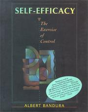

Self-Efficacy: The Exercise of Control
Book·Albert Bandura, 1997·自我效能：控制的运用

The most complete work on self-efficacy research.
- Author
- Albert Bandura
- Year
- 1997
- Difficulty
- Advanced
- Kind
- Primary text
- Schools
- Social Learning Theory
- Core theories
- Self-Efficacy Theory, Reciprocal Determinism
Editions
- Chinese edition 《自我效能》 A·班杜拉 · 华东师范大学出版社 · 2003 Douban 8.2 (87 ratings) Douban page ↗
- English edition Self-Efficacy: The Exercise of Control Albert Bandura · W. H. Freeman, first edition · 1997 Open Library ↗